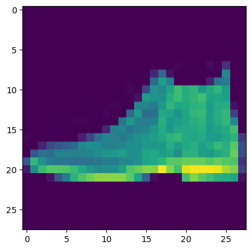
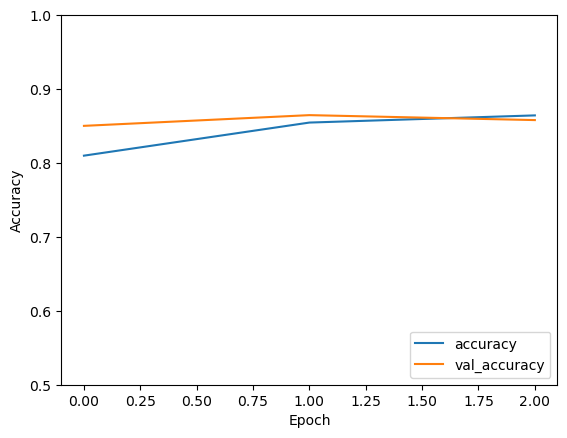
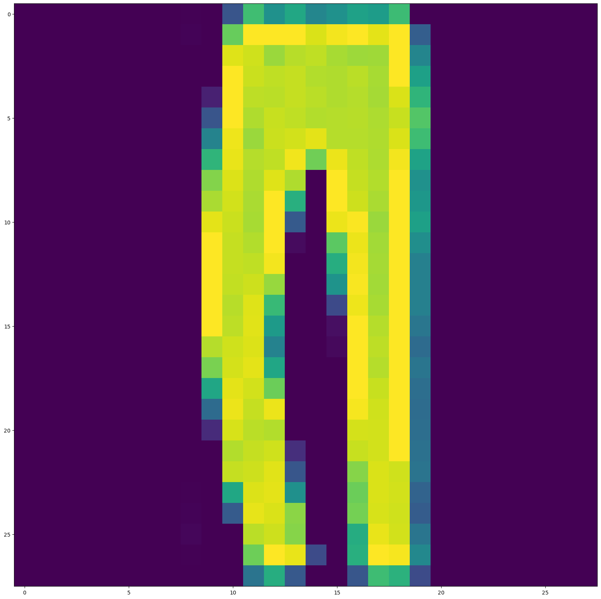
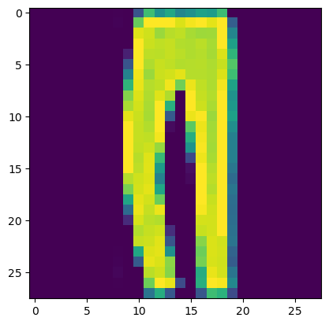
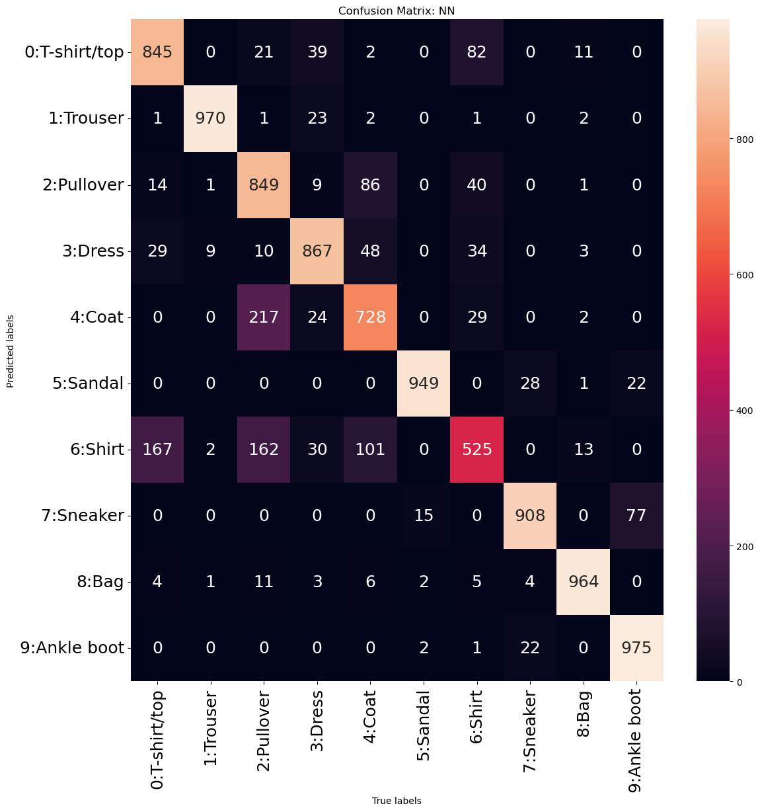

import tensorflow as tf
from tensorflow import keras
from tensorflow.keras import layers
from sklearn.model_selection import train_test_split
import tensorflow.keras
from tensorflow.keras.datasets import mnist
from tensorflow.keras.models import Sequential
from tensorflow.keras.layers import LSTM, Dense, Dropout, LSTM
from tensorflow.keras.optimizers import Adam
import matplotlib.pyplot as plt
from tensorflow.keras import layers
import numpy as np
import pandas as pdIntroduction to Keras
Reference: Professor Ami Gates, Dept. Applied Math, Data Science, University of Colorado
Getting the data loaded and ready
Other similar datasets….
mnist = tf.keras.datasets.mnist
Data_=tf.keras.datasets.imdbData_=tf.keras.datasets.fashion_mnist
## Load the data....
(x_train, y_train),(x_test, y_test) = Data_.load_data()What does the data look like?
print("The first value of x_test is \n", x_test[0])
print("The shape of x_test is \n", x_test.shape)
print("The first value of x_train is \n", x_train[0])
print("The shape of x_train is \n", x_train.shape)
print("The first value of y_test is \n", y_test[0])
print("The shape of y_test is \n", y_test.shape)
print("The first value of y_train is \n", y_train[0])
print("The shape of y_train is \n", y_train.shape)
print("The first few values of y_test are \n", y_test[0:3])
print("The first value - label - of y-test is a ",y_test[0], "and it looks like this:\n")
plt.imshow(x_test[0]) ## NOTICE that to see the image you need x_test[0] and to see the numeric label you need y_test[0]The first value of x_test is
[[ 0 0 0 0 0 0 0 0 0 0 0 0 0 0 0 0 0 0
0 0 0 0 0 0 0 0 0 0]
[ 0 0 0 0 0 0 0 0 0 0 0 0 0 0 0 0 0 0
0 0 0 0 0 0 0 0 0 0]
[ 0 0 0 0 0 0 0 0 0 0 0 0 0 0 0 0 0 0
0 0 0 0 0 0 0 0 0 0]
[ 0 0 0 0 0 0 0 0 0 0 0 0 0 0 0 0 0 0
0 0 0 0 0 0 0 0 0 0]
[ 0 0 0 0 0 0 0 0 0 0 0 0 0 0 0 0 0 0
0 0 0 0 0 0 0 0 0 0]
[ 0 0 0 0 0 0 0 0 0 0 0 0 0 0 0 0 0 0
0 0 0 0 0 0 0 0 0 0]
[ 0 0 0 0 0 0 0 0 0 0 0 0 0 0 0 0 0 0
0 0 0 0 0 0 0 0 0 0]
[ 0 0 0 0 0 0 0 0 0 0 0 0 0 0 0 0 0 0
0 3 1 0 0 7 0 37 0 0]
[ 0 0 0 0 0 0 0 0 0 0 0 0 0 1 2 0 27 84
11 0 0 0 0 0 0 119 0 0]
[ 0 0 0 0 0 0 0 0 0 0 0 0 0 1 0 0 88 143
110 0 0 0 0 22 93 106 0 0]
[ 0 0 0 0 0 0 0 0 0 0 0 0 0 4 0 53 129 120
147 175 157 166 135 154 168 140 0 0]
[ 0 0 0 0 0 0 0 0 0 0 0 0 2 0 11 137 130 128
160 176 159 167 178 149 151 144 0 0]
[ 0 0 0 0 0 0 1 0 2 1 0 3 0 0 115 114 106 137
168 153 156 165 167 143 157 158 11 0]
[ 0 0 0 0 1 0 0 0 0 0 3 0 0 89 139 90 94 153
149 131 151 169 172 143 159 169 48 0]
[ 0 0 0 0 0 0 2 4 1 0 0 0 98 136 110 109 110 162
135 144 149 159 167 144 158 169 119 0]
[ 0 0 2 2 1 2 0 0 0 0 26 108 117 99 111 117 136 156
134 154 154 156 160 141 147 156 178 0]
[ 3 0 0 0 0 0 0 21 53 92 117 111 103 115 129 134 143 154
165 170 154 151 154 143 138 150 165 43]
[ 0 0 23 54 65 76 85 118 128 123 111 113 118 127 125 139 133 136
160 140 155 161 144 155 172 161 189 62]
[ 0 68 94 90 111 114 111 114 115 127 135 136 143 126 127 151 154 143
148 125 162 162 144 138 153 162 196 58]
[ 70 169 129 104 98 100 94 97 98 102 108 106 119 120 129 149 156 167
190 190 196 198 198 187 197 189 184 36]
[ 16 126 171 188 188 184 171 153 135 120 126 127 146 185 195 209 208 255
209 177 245 252 251 251 247 220 206 49]
[ 0 0 0 12 67 106 164 185 199 210 211 210 208 190 150 82 8 0
0 0 178 208 188 175 162 158 151 11]
[ 0 0 0 0 0 0 0 0 0 0 0 0 0 0 0 0 0 0
0 0 0 0 0 0 0 0 0 0]
[ 0 0 0 0 0 0 0 0 0 0 0 0 0 0 0 0 0 0
0 0 0 0 0 0 0 0 0 0]
[ 0 0 0 0 0 0 0 0 0 0 0 0 0 0 0 0 0 0
0 0 0 0 0 0 0 0 0 0]
[ 0 0 0 0 0 0 0 0 0 0 0 0 0 0 0 0 0 0
0 0 0 0 0 0 0 0 0 0]
[ 0 0 0 0 0 0 0 0 0 0 0 0 0 0 0 0 0 0
0 0 0 0 0 0 0 0 0 0]
[ 0 0 0 0 0 0 0 0 0 0 0 0 0 0 0 0 0 0
0 0 0 0 0 0 0 0 0 0]]
The shape of x_test is
(10000, 28, 28)
The first value of x_train is
[[ 0 0 0 0 0 0 0 0 0 0 0 0 0 0 0 0 0 0
0 0 0 0 0 0 0 0 0 0]
[ 0 0 0 0 0 0 0 0 0 0 0 0 0 0 0 0 0 0
0 0 0 0 0 0 0 0 0 0]
[ 0 0 0 0 0 0 0 0 0 0 0 0 0 0 0 0 0 0
0 0 0 0 0 0 0 0 0 0]
[ 0 0 0 0 0 0 0 0 0 0 0 0 1 0 0 13 73 0
0 1 4 0 0 0 0 1 1 0]
[ 0 0 0 0 0 0 0 0 0 0 0 0 3 0 36 136 127 62
54 0 0 0 1 3 4 0 0 3]
[ 0 0 0 0 0 0 0 0 0 0 0 0 6 0 102 204 176 134
144 123 23 0 0 0 0 12 10 0]
[ 0 0 0 0 0 0 0 0 0 0 0 0 0 0 155 236 207 178
107 156 161 109 64 23 77 130 72 15]
[ 0 0 0 0 0 0 0 0 0 0 0 1 0 69 207 223 218 216
216 163 127 121 122 146 141 88 172 66]
[ 0 0 0 0 0 0 0 0 0 1 1 1 0 200 232 232 233 229
223 223 215 213 164 127 123 196 229 0]
[ 0 0 0 0 0 0 0 0 0 0 0 0 0 183 225 216 223 228
235 227 224 222 224 221 223 245 173 0]
[ 0 0 0 0 0 0 0 0 0 0 0 0 0 193 228 218 213 198
180 212 210 211 213 223 220 243 202 0]
[ 0 0 0 0 0 0 0 0 0 1 3 0 12 219 220 212 218 192
169 227 208 218 224 212 226 197 209 52]
[ 0 0 0 0 0 0 0 0 0 0 6 0 99 244 222 220 218 203
198 221 215 213 222 220 245 119 167 56]
[ 0 0 0 0 0 0 0 0 0 4 0 0 55 236 228 230 228 240
232 213 218 223 234 217 217 209 92 0]
[ 0 0 1 4 6 7 2 0 0 0 0 0 237 226 217 223 222 219
222 221 216 223 229 215 218 255 77 0]
[ 0 3 0 0 0 0 0 0 0 62 145 204 228 207 213 221 218 208
211 218 224 223 219 215 224 244 159 0]
[ 0 0 0 0 18 44 82 107 189 228 220 222 217 226 200 205 211 230
224 234 176 188 250 248 233 238 215 0]
[ 0 57 187 208 224 221 224 208 204 214 208 209 200 159 245 193 206 223
255 255 221 234 221 211 220 232 246 0]
[ 3 202 228 224 221 211 211 214 205 205 205 220 240 80 150 255 229 221
188 154 191 210 204 209 222 228 225 0]
[ 98 233 198 210 222 229 229 234 249 220 194 215 217 241 65 73 106 117
168 219 221 215 217 223 223 224 229 29]
[ 75 204 212 204 193 205 211 225 216 185 197 206 198 213 240 195 227 245
239 223 218 212 209 222 220 221 230 67]
[ 48 203 183 194 213 197 185 190 194 192 202 214 219 221 220 236 225 216
199 206 186 181 177 172 181 205 206 115]
[ 0 122 219 193 179 171 183 196 204 210 213 207 211 210 200 196 194 191
195 191 198 192 176 156 167 177 210 92]
[ 0 0 74 189 212 191 175 172 175 181 185 188 189 188 193 198 204 209
210 210 211 188 188 194 192 216 170 0]
[ 2 0 0 0 66 200 222 237 239 242 246 243 244 221 220 193 191 179
182 182 181 176 166 168 99 58 0 0]
[ 0 0 0 0 0 0 0 40 61 44 72 41 35 0 0 0 0 0
0 0 0 0 0 0 0 0 0 0]
[ 0 0 0 0 0 0 0 0 0 0 0 0 0 0 0 0 0 0
0 0 0 0 0 0 0 0 0 0]
[ 0 0 0 0 0 0 0 0 0 0 0 0 0 0 0 0 0 0
0 0 0 0 0 0 0 0 0 0]]
The shape of x_train is
(60000, 28, 28)
The first value of y_test is
9
The shape of y_test is
(10000,)
The first value of y_train is
9
The shape of y_train is
(60000,)
The first few values of y_test are
[9 2 1]
The first value - label - of y-test is a 9 and it looks like this:
<matplotlib.image.AxesImage at 0x1c41c4ca340>
Data Normalization
BEFORE
print("Before normalization - x_train[0] is \n", x_train[0])Before normalization - x_train[0] is
[[ 0 0 0 0 0 0 0 0 0 0 0 0 0 0 0 0 0 0
0 0 0 0 0 0 0 0 0 0]
[ 0 0 0 0 0 0 0 0 0 0 0 0 0 0 0 0 0 0
0 0 0 0 0 0 0 0 0 0]
[ 0 0 0 0 0 0 0 0 0 0 0 0 0 0 0 0 0 0
0 0 0 0 0 0 0 0 0 0]
[ 0 0 0 0 0 0 0 0 0 0 0 0 1 0 0 13 73 0
0 1 4 0 0 0 0 1 1 0]
[ 0 0 0 0 0 0 0 0 0 0 0 0 3 0 36 136 127 62
54 0 0 0 1 3 4 0 0 3]
[ 0 0 0 0 0 0 0 0 0 0 0 0 6 0 102 204 176 134
144 123 23 0 0 0 0 12 10 0]
[ 0 0 0 0 0 0 0 0 0 0 0 0 0 0 155 236 207 178
107 156 161 109 64 23 77 130 72 15]
[ 0 0 0 0 0 0 0 0 0 0 0 1 0 69 207 223 218 216
216 163 127 121 122 146 141 88 172 66]
[ 0 0 0 0 0 0 0 0 0 1 1 1 0 200 232 232 233 229
223 223 215 213 164 127 123 196 229 0]
[ 0 0 0 0 0 0 0 0 0 0 0 0 0 183 225 216 223 228
235 227 224 222 224 221 223 245 173 0]
[ 0 0 0 0 0 0 0 0 0 0 0 0 0 193 228 218 213 198
180 212 210 211 213 223 220 243 202 0]
[ 0 0 0 0 0 0 0 0 0 1 3 0 12 219 220 212 218 192
169 227 208 218 224 212 226 197 209 52]
[ 0 0 0 0 0 0 0 0 0 0 6 0 99 244 222 220 218 203
198 221 215 213 222 220 245 119 167 56]
[ 0 0 0 0 0 0 0 0 0 4 0 0 55 236 228 230 228 240
232 213 218 223 234 217 217 209 92 0]
[ 0 0 1 4 6 7 2 0 0 0 0 0 237 226 217 223 222 219
222 221 216 223 229 215 218 255 77 0]
[ 0 3 0 0 0 0 0 0 0 62 145 204 228 207 213 221 218 208
211 218 224 223 219 215 224 244 159 0]
[ 0 0 0 0 18 44 82 107 189 228 220 222 217 226 200 205 211 230
224 234 176 188 250 248 233 238 215 0]
[ 0 57 187 208 224 221 224 208 204 214 208 209 200 159 245 193 206 223
255 255 221 234 221 211 220 232 246 0]
[ 3 202 228 224 221 211 211 214 205 205 205 220 240 80 150 255 229 221
188 154 191 210 204 209 222 228 225 0]
[ 98 233 198 210 222 229 229 234 249 220 194 215 217 241 65 73 106 117
168 219 221 215 217 223 223 224 229 29]
[ 75 204 212 204 193 205 211 225 216 185 197 206 198 213 240 195 227 245
239 223 218 212 209 222 220 221 230 67]
[ 48 203 183 194 213 197 185 190 194 192 202 214 219 221 220 236 225 216
199 206 186 181 177 172 181 205 206 115]
[ 0 122 219 193 179 171 183 196 204 210 213 207 211 210 200 196 194 191
195 191 198 192 176 156 167 177 210 92]
[ 0 0 74 189 212 191 175 172 175 181 185 188 189 188 193 198 204 209
210 210 211 188 188 194 192 216 170 0]
[ 2 0 0 0 66 200 222 237 239 242 246 243 244 221 220 193 191 179
182 182 181 176 166 168 99 58 0 0]
[ 0 0 0 0 0 0 0 40 61 44 72 41 35 0 0 0 0 0
0 0 0 0 0 0 0 0 0 0]
[ 0 0 0 0 0 0 0 0 0 0 0 0 0 0 0 0 0 0
0 0 0 0 0 0 0 0 0 0]
[ 0 0 0 0 0 0 0 0 0 0 0 0 0 0 0 0 0 0
0 0 0 0 0 0 0 0 0 0]]AFTER
x_train, x_test = x_train / 255.0, x_test / 255.0
print("After normalization - x_train[0] is \n", x_train[0])After normalization - x_train[0] is
[[0. 0. 0. 0. 0. 0.
0. 0. 0. 0. 0. 0.
0. 0. 0. 0. 0. 0.
0. 0. 0. 0. 0. 0.
0. 0. 0. 0. ]
[0. 0. 0. 0. 0. 0.
0. 0. 0. 0. 0. 0.
0. 0. 0. 0. 0. 0.
0. 0. 0. 0. 0. 0.
0. 0. 0. 0. ]
[0. 0. 0. 0. 0. 0.
0. 0. 0. 0. 0. 0.
0. 0. 0. 0. 0. 0.
0. 0. 0. 0. 0. 0.
0. 0. 0. 0. ]
[0. 0. 0. 0. 0. 0.
0. 0. 0. 0. 0. 0.
0.00392157 0. 0. 0.05098039 0.28627451 0.
0. 0.00392157 0.01568627 0. 0. 0.
0. 0.00392157 0.00392157 0. ]
[0. 0. 0. 0. 0. 0.
0. 0. 0. 0. 0. 0.
0.01176471 0. 0.14117647 0.53333333 0.49803922 0.24313725
0.21176471 0. 0. 0. 0.00392157 0.01176471
0.01568627 0. 0. 0.01176471]
[0. 0. 0. 0. 0. 0.
0. 0. 0. 0. 0. 0.
0.02352941 0. 0.4 0.8 0.69019608 0.5254902
0.56470588 0.48235294 0.09019608 0. 0. 0.
0. 0.04705882 0.03921569 0. ]
[0. 0. 0. 0. 0. 0.
0. 0. 0. 0. 0. 0.
0. 0. 0.60784314 0.9254902 0.81176471 0.69803922
0.41960784 0.61176471 0.63137255 0.42745098 0.25098039 0.09019608
0.30196078 0.50980392 0.28235294 0.05882353]
[0. 0. 0. 0. 0. 0.
0. 0. 0. 0. 0. 0.00392157
0. 0.27058824 0.81176471 0.8745098 0.85490196 0.84705882
0.84705882 0.63921569 0.49803922 0.4745098 0.47843137 0.57254902
0.55294118 0.34509804 0.6745098 0.25882353]
[0. 0. 0. 0. 0. 0.
0. 0. 0. 0.00392157 0.00392157 0.00392157
0. 0.78431373 0.90980392 0.90980392 0.91372549 0.89803922
0.8745098 0.8745098 0.84313725 0.83529412 0.64313725 0.49803922
0.48235294 0.76862745 0.89803922 0. ]
[0. 0. 0. 0. 0. 0.
0. 0. 0. 0. 0. 0.
0. 0.71764706 0.88235294 0.84705882 0.8745098 0.89411765
0.92156863 0.89019608 0.87843137 0.87058824 0.87843137 0.86666667
0.8745098 0.96078431 0.67843137 0. ]
[0. 0. 0. 0. 0. 0.
0. 0. 0. 0. 0. 0.
0. 0.75686275 0.89411765 0.85490196 0.83529412 0.77647059
0.70588235 0.83137255 0.82352941 0.82745098 0.83529412 0.8745098
0.8627451 0.95294118 0.79215686 0. ]
[0. 0. 0. 0. 0. 0.
0. 0. 0. 0.00392157 0.01176471 0.
0.04705882 0.85882353 0.8627451 0.83137255 0.85490196 0.75294118
0.6627451 0.89019608 0.81568627 0.85490196 0.87843137 0.83137255
0.88627451 0.77254902 0.81960784 0.20392157]
[0. 0. 0. 0. 0. 0.
0. 0. 0. 0. 0.02352941 0.
0.38823529 0.95686275 0.87058824 0.8627451 0.85490196 0.79607843
0.77647059 0.86666667 0.84313725 0.83529412 0.87058824 0.8627451
0.96078431 0.46666667 0.65490196 0.21960784]
[0. 0. 0. 0. 0. 0.
0. 0. 0. 0.01568627 0. 0.
0.21568627 0.9254902 0.89411765 0.90196078 0.89411765 0.94117647
0.90980392 0.83529412 0.85490196 0.8745098 0.91764706 0.85098039
0.85098039 0.81960784 0.36078431 0. ]
[0. 0. 0.00392157 0.01568627 0.02352941 0.02745098
0.00784314 0. 0. 0. 0. 0.
0.92941176 0.88627451 0.85098039 0.8745098 0.87058824 0.85882353
0.87058824 0.86666667 0.84705882 0.8745098 0.89803922 0.84313725
0.85490196 1. 0.30196078 0. ]
[0. 0.01176471 0. 0. 0. 0.
0. 0. 0. 0.24313725 0.56862745 0.8
0.89411765 0.81176471 0.83529412 0.86666667 0.85490196 0.81568627
0.82745098 0.85490196 0.87843137 0.8745098 0.85882353 0.84313725
0.87843137 0.95686275 0.62352941 0. ]
[0. 0. 0. 0. 0.07058824 0.17254902
0.32156863 0.41960784 0.74117647 0.89411765 0.8627451 0.87058824
0.85098039 0.88627451 0.78431373 0.80392157 0.82745098 0.90196078
0.87843137 0.91764706 0.69019608 0.7372549 0.98039216 0.97254902
0.91372549 0.93333333 0.84313725 0. ]
[0. 0.22352941 0.73333333 0.81568627 0.87843137 0.86666667
0.87843137 0.81568627 0.8 0.83921569 0.81568627 0.81960784
0.78431373 0.62352941 0.96078431 0.75686275 0.80784314 0.8745098
1. 1. 0.86666667 0.91764706 0.86666667 0.82745098
0.8627451 0.90980392 0.96470588 0. ]
[0.01176471 0.79215686 0.89411765 0.87843137 0.86666667 0.82745098
0.82745098 0.83921569 0.80392157 0.80392157 0.80392157 0.8627451
0.94117647 0.31372549 0.58823529 1. 0.89803922 0.86666667
0.7372549 0.60392157 0.74901961 0.82352941 0.8 0.81960784
0.87058824 0.89411765 0.88235294 0. ]
[0.38431373 0.91372549 0.77647059 0.82352941 0.87058824 0.89803922
0.89803922 0.91764706 0.97647059 0.8627451 0.76078431 0.84313725
0.85098039 0.94509804 0.25490196 0.28627451 0.41568627 0.45882353
0.65882353 0.85882353 0.86666667 0.84313725 0.85098039 0.8745098
0.8745098 0.87843137 0.89803922 0.11372549]
[0.29411765 0.8 0.83137255 0.8 0.75686275 0.80392157
0.82745098 0.88235294 0.84705882 0.7254902 0.77254902 0.80784314
0.77647059 0.83529412 0.94117647 0.76470588 0.89019608 0.96078431
0.9372549 0.8745098 0.85490196 0.83137255 0.81960784 0.87058824
0.8627451 0.86666667 0.90196078 0.2627451 ]
[0.18823529 0.79607843 0.71764706 0.76078431 0.83529412 0.77254902
0.7254902 0.74509804 0.76078431 0.75294118 0.79215686 0.83921569
0.85882353 0.86666667 0.8627451 0.9254902 0.88235294 0.84705882
0.78039216 0.80784314 0.72941176 0.70980392 0.69411765 0.6745098
0.70980392 0.80392157 0.80784314 0.45098039]
[0. 0.47843137 0.85882353 0.75686275 0.70196078 0.67058824
0.71764706 0.76862745 0.8 0.82352941 0.83529412 0.81176471
0.82745098 0.82352941 0.78431373 0.76862745 0.76078431 0.74901961
0.76470588 0.74901961 0.77647059 0.75294118 0.69019608 0.61176471
0.65490196 0.69411765 0.82352941 0.36078431]
[0. 0. 0.29019608 0.74117647 0.83137255 0.74901961
0.68627451 0.6745098 0.68627451 0.70980392 0.7254902 0.7372549
0.74117647 0.7372549 0.75686275 0.77647059 0.8 0.81960784
0.82352941 0.82352941 0.82745098 0.7372549 0.7372549 0.76078431
0.75294118 0.84705882 0.66666667 0. ]
[0.00784314 0. 0. 0. 0.25882353 0.78431373
0.87058824 0.92941176 0.9372549 0.94901961 0.96470588 0.95294118
0.95686275 0.86666667 0.8627451 0.75686275 0.74901961 0.70196078
0.71372549 0.71372549 0.70980392 0.69019608 0.65098039 0.65882353
0.38823529 0.22745098 0. 0. ]
[0. 0. 0. 0. 0. 0.
0. 0.15686275 0.23921569 0.17254902 0.28235294 0.16078431
0.1372549 0. 0. 0. 0. 0.
0. 0. 0. 0. 0. 0.
0. 0. 0. 0. ]
[0. 0. 0. 0. 0. 0.
0. 0. 0. 0. 0. 0.
0. 0. 0. 0. 0. 0.
0. 0. 0. 0. 0. 0.
0. 0. 0. 0. ]
[0. 0. 0. 0. 0. 0.
0. 0. 0. 0. 0. 0.
0. 0. 0. 0. 0. 0.
0. 0. 0. 0. 0. 0.
0. 0. 0. 0. ]]NOTE - we DO NOT normalize y. Why not?
Using Keras
Step 1: Create a TF - Keras NN Model
https://keras.io/guides/sequential_model/
The Sequential Model:
- A Sequential model is appropriate for a plain stack of layers where each layer has exactly one input tensor and one output tensor.
- Tensors are multi-dimensional arrays with a uniform type.
- A tensor with one dimension can be thought of as a vector,
- A tensor with two dimensions as a matrix and
- A tensor with three dimensions can be thought of as a cuboid.
- A Sequential model is not appropriate when:
- Your model has multiple inputs or multiple outputs
- Any of your layers has multiple inputs or multiple outputs
- etc.
All layers in Keras need to know the shape of their inputs in order to be able to create their weights.
NN_Model = tf.keras.models.Sequential([
tf.keras.layers.Flatten(input_shape=(28, 28)), ##(None,784)
# Dense implements the operation:
## output = activation(dot(input, kernel) + bias)
## The "kernel" are the weights matrix.
tf.keras.layers.Dense(128, activation='relu'), #https://keras.io/api/layers/core_layers/dense/
## The first value, 128 here, are the units.
## units: Positive integer, dimensionality of the output space.
## Here, x_train is (60000,28,28)
## This Dense Layer output will be (None, 128)
## https://www.tutorialspoint.com/keras/keras_dense_layer.htm
tf.keras.layers.Dropout(0.2), ##(None, 128)
tf.keras.layers.Dense(10, activation='softmax') ## (None, 10)
])
NN_Model.summary()Model: "sequential"
_________________________________________________________________
Layer (type) Output Shape Param #
=================================================================
flatten (Flatten) (None, 784) 0
dense (Dense) (None, 128) 100480
dropout (Dropout) (None, 128) 0
dense_1 (Dense) (None, 10) 1290
=================================================================
Total params: 101,770
Trainable params: 101,770
Non-trainable params: 0
_________________________________________________________________Dense Keras layer
Dense implements the operation:
output = activation(dot(input, kernel) + bias)The “kernel” are the weights matrix.
https://keras.io/api/layers/core_layers/dense/
tf.keras.layers.Dense(128, activation='relu')- The first value,
128here, are the units.- units: Positive integer, dimensionality of the output space.
- Here,
x_trainis(60000,28,28) - This Dense Layer output will be
(None, 128)
Step 2: Compile the Model
NN_Model.compile(
loss="sparse_categorical_crossentropy",
metrics=["accuracy"],
optimizer='adam'
)Step 3 - Fit the Model to the data (train the model)
Making the number of epochs larger can improve the model and prediction accuracy
Hist=NN_Model.fit(x_train,y_train, epochs=3,validation_data=(x_test, y_test))Epoch 1/3
1875/1875 [==============================] - 8s 4ms/step - loss: 0.5308 - accuracy: 0.8099 - val_loss: 0.4226 - val_accuracy: 0.8502
Epoch 2/3
1875/1875 [==============================] - 6s 3ms/step - loss: 0.3967 - accuracy: 0.8547 - val_loss: 0.3774 - val_accuracy: 0.8647
Epoch 3/3
1875/1875 [==============================] - 6s 3ms/step - loss: 0.3657 - accuracy: 0.8644 - val_loss: 0.3859 - val_accuracy: 0.8580History and Accuracy
plt.plot(Hist.history['accuracy'], label='accuracy')
plt.plot(Hist.history['val_accuracy'], label = 'val_accuracy')
plt.xlabel('Epoch')
plt.ylabel('Accuracy')
plt.ylim([0.5, 1])
plt.legend(loc='lower right')<matplotlib.legend.Legend at 0x1c422fbb4c0>
Test and Model
Test_Loss, Test_Accuracy = NN_Model.evaluate(x_test, y_test)313/313 [==============================] - 1s 2ms/step - loss: 0.3859 - accuracy: 0.8580Save the Model
NN_Model.save("MNIST_Example1_NN_Model")INFO:tensorflow:Assets written to: MNIST_Example1_NN_Model\assetsPredictions
RE: https://www.tensorflow.org/api_docs/python/tf/keras/datasets/fashion_mnist/load_data
print(x_test[2])
print(x_test[2].shape)
plt.figure(figsize = (20,20))
plt.imshow(x_test[2]) ## x_test[2] is the third test vector. Its label is a 1
print("The label of this test image is \n", y_test[2]) ## Label of x_test[2][[0. 0. 0. 0. 0. 0.
0. 0. 0.00392157 0. 0.2627451 0.69411765
0.50588235 0.6 0.45882353 0.50588235 0.57254902 0.55294118
0.68627451 0. 0. 0. 0. 0.
0. 0. 0. 0. ]
[0. 0. 0. 0. 0. 0.
0. 0. 0.00784314 0. 0.76862745 1.
1. 1. 0.94509804 0.98431373 1. 0.96078431
1. 0.29803922 0. 0. 0. 0.
0. 0. 0. 0. ]
[0. 0. 0. 0. 0. 0.
0. 0. 0. 0. 0.95294118 0.92941176
0.85098039 0.89411765 0.90588235 0.87058824 0.85490196 0.85882353
1. 0.45490196 0. 0. 0. 0.
0. 0. 0. 0. ]
[0. 0. 0. 0. 0. 0.
0. 0. 0. 0. 1. 0.92156863
0.90588235 0.91372549 0.88627451 0.88235294 0.89803922 0.87058824
1. 0.56862745 0. 0. 0. 0.
0. 0. 0. 0. ]
[0. 0. 0. 0. 0. 0.
0. 0. 0. 0.09019608 1. 0.90196078
0.89803922 0.91372549 0.89803922 0.88235294 0.89019608 0.86666667
0.94509804 0.65490196 0. 0. 0. 0.
0. 0. 0. 0. ]
[0. 0. 0. 0. 0. 0.
0. 0. 0. 0.2627451 1. 0.88235294
0.91764706 0.90588235 0.88627451 0.89019608 0.89411765 0.87843137
0.91764706 0.73333333 0. 0. 0. 0.
0. 0. 0. 0. ]
[0. 0. 0. 0. 0. 0.
0. 0. 0. 0.44705882 0.97647059 0.85098039
0.92156863 0.93333333 0.96078431 0.89019608 0.89019608 0.88235294
0.94509804 0.69019608 0. 0. 0. 0.
0. 0. 0. 0. ]
[0. 0. 0. 0. 0. 0.
0. 0. 0. 0.65490196 0.96862745 0.89019608
0.90588235 0.98039216 0.78431373 0.97254902 0.90588235 0.87843137
0.98431373 0.57647059 0. 0. 0. 0.
0. 0. 0. 0. ]
[0. 0. 0. 0. 0. 0.
0. 0. 0. 0.81568627 0.94901961 0.88235294
0.95294118 0.88235294 0. 1. 0.91372549 0.88627451
1. 0.50588235 0. 0. 0. 0.
0. 0. 0. 0. ]
[0. 0. 0. 0. 0. 0.
0. 0. 0. 0.8745098 0.93333333 0.8745098
1. 0.63137255 0. 1. 0.9254902 0.8745098
1. 0.52941176 0. 0. 0. 0.
0. 0. 0. 0. ]
[0. 0. 0. 0. 0. 0.
0. 0. 0. 0.96078431 0.92156863 0.87058824
1. 0.28235294 0. 0.97254902 0.99607843 0.85098039
1. 0.56862745 0. 0. 0. 0.
0. 0. 0. 0. ]
[0. 0. 0. 0. 0. 0.
0. 0. 0. 1. 0.91372549 0.88627451
1. 0.02745098 0. 0.74901961 0.97254902 0.8627451
1. 0.49411765 0. 0. 0. 0.
0. 0. 0. 0. ]
[0. 0. 0. 0. 0. 0.
0. 0. 0. 1. 0.91372549 0.90588235
0.98431373 0. 0. 0.62352941 0.98431373 0.86666667
1. 0.43529412 0. 0. 0. 0.
0. 0. 0. 0. ]
[0. 0. 0. 0. 0. 0.
0. 0. 0. 1. 0.90980392 0.9254902
0.84705882 0. 0. 0.51372549 0.99215686 0.8627451
1. 0.43529412 0. 0. 0. 0.
0. 0. 0. 0. ]
[0. 0. 0. 0. 0. 0.
0. 0. 0. 1. 0.89411765 0.95294118
0.6745098 0. 0. 0.22352941 0.97647059 0.87058824
1. 0.43529412 0. 0. 0. 0.
0. 0. 0. 0. ]
[0. 0. 0. 0. 0. 0.
0. 0. 0. 1. 0.90196078 0.95686275
0.54509804 0. 0. 0.03921569 1. 0.89019608
1. 0.39215686 0. 0. 0. 0.
0. 0. 0. 0. ]
[0. 0. 0. 0. 0. 0.
0. 0. 0. 0.89019608 0.92941176 0.94901961
0.44313725 0. 0. 0.02352941 1. 0.90196078
1. 0.34901961 0. 0. 0. 0.
0. 0. 0. 0. ]
[0. 0. 0. 0. 0. 0.
0. 0. 0. 0.8 0.9372549 0.96078431
0.59215686 0. 0. 0. 1. 0.89019608
1. 0.38823529 0. 0. 0. 0.
0. 0. 0. 0. ]
[0. 0. 0. 0. 0. 0.
0. 0. 0. 0.59215686 0.96078431 0.93333333
0.77647059 0. 0. 0. 1. 0.91764706
1. 0.36078431 0. 0. 0. 0.
0. 0. 0. 0. ]
[0. 0. 0. 0. 0. 0.
0. 0. 0. 0.34901961 0.97254902 0.91372549
0.97254902 0. 0. 0. 0.98823529 0.92941176
1. 0.35294118 0. 0. 0. 0.
0. 0. 0. 0. ]
[0. 0. 0. 0. 0. 0.
0. 0. 0. 0.12156863 0.94117647 0.89803922
0.88627451 0. 0. 0. 0.9372549 0.93333333
1. 0.36078431 0. 0. 0. 0.
0. 0. 0. 0. ]
[0. 0. 0. 0. 0. 0.
0. 0. 0. 0. 0.88627451 0.91372549
0.92941176 0.13333333 0. 0. 0.91764706 0.93333333
1. 0.37254902 0. 0. 0. 0.
0. 0. 0. 0. ]
[0. 0. 0. 0. 0. 0.
0. 0. 0. 0. 0.91372549 0.9254902
0.95686275 0.26666667 0. 0. 0.81960784 0.94509804
0.92941176 0.38431373 0. 0. 0. 0.
0. 0. 0. 0. ]
[0. 0. 0. 0. 0. 0.
0. 0. 0.00392157 0. 0.59607843 0.94901961
0.96078431 0.50196078 0. 0. 0.77647059 0.94509804
0.93333333 0.31764706 0. 0. 0. 0.
0. 0. 0. 0. ]
[0. 0. 0. 0. 0. 0.
0. 0. 0.00784314 0. 0.28627451 0.96470588
0.94509804 0.82745098 0. 0. 0.79215686 0.94117647
0.92941176 0.29019608 0. 0. 0. 0.
0. 0. 0. 0. ]
[0. 0. 0. 0. 0. 0.
0. 0. 0.01568627 0. 0. 0.89803922
0.9254902 0.81960784 0. 0. 0.61960784 0.96862745
0.93333333 0.38823529 0. 0. 0. 0.
0. 0. 0. 0. ]
[0. 0. 0. 0. 0. 0.
0. 0. 0.00392157 0. 0. 0.78039216
1. 0.96862745 0.22745098 0. 0.63137255 1.
0.98823529 0.46666667 0. 0. 0. 0.
0. 0. 0. 0. ]
[0. 0. 0. 0. 0. 0.
0. 0. 0. 0. 0. 0.38431373
0.62352941 0.27843137 0. 0. 0.26666667 0.69019608
0.64313725 0.22745098 0. 0. 0. 0.
0. 0. 0. 0. ]]
(28, 28)
The label of this test image is
1
All predictions
predictions=NN_Model.predict([x_test])
print("All of the predictions for the test data are \n", predictions) ## All the predictions (all 10,000)
print("The single prediction vector for x_test[2] is \n", predictions[2]) ## Just the third prediction
print("The max - final prediction label for x_test[2] is\n", np.argmax(predictions[2])) ## The argmax of the third prediction - this is the label313/313 [==============================] - 1s 2ms/step
All of the predictions for the test data are
[[3.26962390e-06 1.60524723e-06 1.51764937e-06 ... 8.10598023e-03
5.02515577e-05 9.61238503e-01]
[1.86777452e-05 1.23281152e-09 9.96375918e-01 ... 4.64459504e-12
1.06411555e-08 5.62115784e-13]
[4.11614650e-07 9.99999225e-01 3.69419126e-08 ... 1.17997881e-14
6.09170769e-10 4.48443264e-14]
...
[1.46703818e-03 2.02914183e-08 3.30298033e-04 ... 8.90591036e-06
9.95875478e-01 2.80911436e-08]
[1.82080910e-07 9.99971688e-01 8.05895937e-08 ... 2.42464555e-11
1.30697524e-08 2.26461488e-10]
[1.00976315e-04 1.47972223e-05 1.21575074e-04 ... 1.30586671e-02
3.21544008e-03 3.20462277e-04]]
The single prediction vector for x_test[2] is
[4.11614650e-07 9.99999225e-01 3.69419126e-08 1.13407005e-07
1.64193878e-07 9.40884783e-12 2.60632582e-09 1.17997881e-14
6.09170769e-10 4.48443264e-14]
The max - final prediction label for x_test[2] is
1Print the prediction to compare
GetPredictedImage=x_test[y_test==np.argmax(predictions[2])][0]
## The above prints the first example that matches the predicted label
plt.imshow(GetPredictedImage)<matplotlib.image.AxesImage at 0x1c420b5ef10>
Confusion Matrix and Accuracy - and Visual Options
print("The test accuracy is \n", Test_Accuracy)
import matplotlib.pyplot as plt
from sklearn.metrics import confusion_matrix
print("The prediction accuracy via confusion matrix is:\n")
print(y_test)
print(predictions)
print(predictions.shape) ##(10000,10)
Max_Values = np.squeeze(np.array(predictions.argmax(axis=1)))
print(Max_Values)
print(np.argmax([predictions]))
print(confusion_matrix(Max_Values, y_test))The test accuracy is
0.8579999804496765
The prediction accuracy via confusion matrix is:
[9 2 1 ... 8 1 5]
[[3.26962390e-06 1.60524723e-06 1.51764937e-06 ... 8.10598023e-03
5.02515577e-05 9.61238503e-01]
[1.86777452e-05 1.23281152e-09 9.96375918e-01 ... 4.64459504e-12
1.06411555e-08 5.62115784e-13]
[4.11614650e-07 9.99999225e-01 3.69419126e-08 ... 1.17997881e-14
6.09170769e-10 4.48443264e-14]
...
[1.46703818e-03 2.02914183e-08 3.30298033e-04 ... 8.90591036e-06
9.95875478e-01 2.80911436e-08]
[1.82080910e-07 9.99971688e-01 8.05895937e-08 ... 2.42464555e-11
1.30697524e-08 2.26461488e-10]
[1.00976315e-04 1.47972223e-05 1.21575074e-04 ... 1.30586671e-02
3.21544008e-03 3.20462277e-04]]
(10000, 10)
[9 2 1 ... 8 1 5]
761
[[845 1 14 29 0 0 167 0 4 0]
[ 0 970 1 9 0 0 2 0 1 0]
[ 21 1 849 10 217 0 162 0 11 0]
[ 39 23 9 867 24 0 30 0 3 0]
[ 2 2 86 48 728 0 101 0 6 0]
[ 0 0 0 0 0 949 0 15 2 2]
[ 82 1 40 34 29 0 525 0 5 1]
[ 0 0 0 0 0 28 0 908 4 22]
[ 11 2 1 3 2 1 13 0 964 0]
[ 0 0 0 0 0 22 0 77 0 975]]Pretty Confusion Matrix
labels = [0, 1, 2, 3, 4, 5, 6, 7, 8, 9]
cm = confusion_matrix(y_test, Max_Values, labels=labels)
print(cm)[[845 0 21 39 2 0 82 0 11 0]
[ 1 970 1 23 2 0 1 0 2 0]
[ 14 1 849 9 86 0 40 0 1 0]
[ 29 9 10 867 48 0 34 0 3 0]
[ 0 0 217 24 728 0 29 0 2 0]
[ 0 0 0 0 0 949 0 28 1 22]
[167 2 162 30 101 0 525 0 13 0]
[ 0 0 0 0 0 15 0 908 0 77]
[ 4 1 11 3 6 2 5 4 964 0]
[ 0 0 0 0 0 2 1 22 0 975]]import seaborn as sns
fig, ax = plt.subplots(figsize=(13,13))
#ax= plt.subplot()
#sns.set(font_scale=3)
#sns.set (rc = {'figure.figsize':(40, 40)})
sns.heatmap(cm, annot=True, fmt='g', ax=ax, annot_kws={'size': 18})
#annot=True to annotate cells, ftm='g' to disable scientific notation
# annot_kws si size of font in heatmap
# labels, title and ticks
ax.set_xlabel('True labels')
ax.set_ylabel('Predicted labels')
ax.set_title('Confusion Matrix: NN')
ax.xaxis.set_ticklabels(["0:T-shirt/top","1:Trouser",
"2:Pullover","3:Dress","4:Coat",
"5:Sandal","6:Shirt","7:Sneaker",
"8:Bag","9:Ankle boot"],rotation=90, fontsize = 18)
ax.yaxis.set_ticklabels(["0:T-shirt/top","1:Trouser","2:Pullover",
"3:Dress","4:Coat","5:Sandal","6:Shirt",
"7:Sneaker","8:Bag","9:Ankle boot"],rotation=0, fontsize = 18)[Text(0, 0.5, '0:T-shirt/top'),
Text(0, 1.5, '1:Trouser'),
Text(0, 2.5, '2:Pullover'),
Text(0, 3.5, '3:Dress'),
Text(0, 4.5, '4:Coat'),
Text(0, 5.5, '5:Sandal'),
Text(0, 6.5, '6:Shirt'),
Text(0, 7.5, '7:Sneaker'),
Text(0, 8.5, '8:Bag'),
Text(0, 9.5, '9:Ankle boot')]